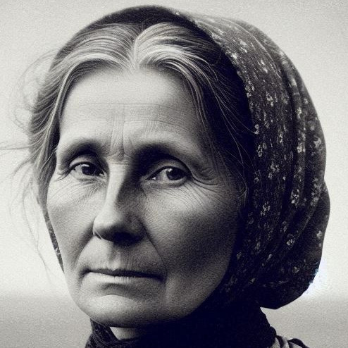

Прасковья Григорьевна Федосова (Дьячкова)

Девичья фамилия – Дьячкова. Родилась 26 октября 1869 г. в д. Абакумовские (Гагинские) Выселки Пронского уезда Рязанской губернии (ныне Рязанская область) в семье простых крестьян: Григория Александровича и Степаниды Ивановны. Девичья фамилия Прасковьи указывает на то, что кто-то в её роду имел какое-то отношение к священнослужителям.
Предки Дьячковых как минимум с 1770-х гг. жили в с. Абакумово, и лишь в начале 1860-х гг. были отселены в одноимённые выселки. Их владельцами издавна были помещики Гагины. Последний из них, заводской управитель Пётр Алексеевич Гагин, оставался помещиком вплоть до отмены крепостничества. После его смерти деревня и часть упомянутого села отошли его племяннице Анне Алексеевне, жене знаменитого мореплавателя Лаврентия Загоскина. Тот, хотя и отличался добрым отношением к крестьянам, не мог изменить их положения: им по-прежнему приходилось тяжело трудиться на земле, не имея средств для её выкупа. Чтобы полностью избавиться от крепостной зависимости, Дьячковым понадобилось более двух десятилетий.
Прасковья была старшим ребёнком в семье. Вот имена некоторых её братьев и сестёр, живших с ней под одной крышей: Анна (1871), Ирина (в замужестве Лукашина), Анисья (в замужестве Буканова), Пётр и Василий. Со временем у каждого из них появились свои семьи.
Примерно в 1887 г. Прасковью выдали замуж за юного односельчанина Никанора Федосова, и уже через год появился на свет их первый сын Александр (1888–1952). Затем семья пополнилась и другими детьми. Вот их имена: Иван (1891–1892), Сергей (1895–1940), Мария (1897–1899), ещё одна Мария (1899), Василий (1901) и Михаил (1903–1942). Некоторые из них, к сожалению, умерли в младенчестве от различных болезней. К при-меру, Иван скончался от дизентерии, а первая Мария – от скарлатины. Другие же достигли зрелого возраста и обзавелись своими семьями.
Сыновья Прасковьи Григорьевны примерно до начала 1930-х гг. оставались в Гагинских Выселках. Там же, очевидно, находилась и она сама. А к моменту, когда сыновья решили перебраться в Москву, Прасковье Григорьевне уже должно было исполниться 60 лет. Если в то время она ещё была жива, то, возможно, могла перебраться в столицу вместе с ними.